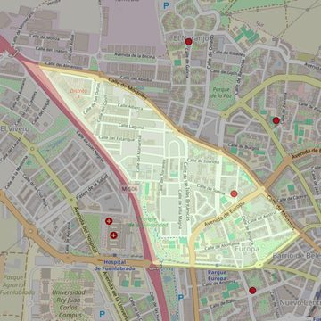

San Francisco y Santa Clara de Asís
- Arciprestazgo
- Fuenlabrada
- Población
- Fuenlabrada
- Dirección postal
- c/ Suecia, 2
- Código postal
- 28942
- Extensión
- 1,10 km² (110 ha)
- Teléfono
- 916 152 431
- Correo electrónico
- sanfranciscoysantaclara-fuenlabrada@diocesisgetafe.es


Descargar mapaLímites según decreto
“Partiendo de la confluencia de la autovía A-506 (de Móstoles a Pinto) con la carretera M-407, arrancan por el eje de la carretera M-407 hasta el término municipal de Leganés (en dirección noreste); continúan por los límites de los términos municipales de Fuenlabrada y Leganés (en dirección noroeste), por los límites de los términos municipales de Fuenlabrada y Alcorcón (en dirección oeste), por los límites de los términos municipales de Fuenlabrada y Móstoles (en dirección sureste) y por el eje de la autovía A-506 (en dirección sureste) hasta la confluencia con la carretera M-407, punto de partida”. (Boletín Oficial, Junio-2000, pág. 565-566)